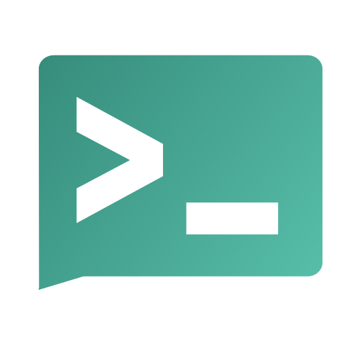

Notifications
Self-hosted alternatives to Pushover, Pushbullet and IFTTT notifications.
What people say
Say any of these to your AI. The Edgible skill guides you through your options.
- send alerts to my phone from my own scripts
- tell me when a backup or job fails
- push notifications without a third-party service
- alerts from my self-hosted apps in one place
Why people self-host it
People leave Pushover, Pushbullet, IFTTT notifications for it. Why, strongest first: privacy, cost, control.
Does it suit a machine of your own?
Good fit a small always-on web service that phones and scripts call, which is what Edgible publishes; its callers cannot sign in to Edgible, so it relies on its own tokens
Questions that decide it
- what will send the notifications, and what will receive them?
- iPhone, Android, or both?
How to publish it
- Usually
- none, because phone apps and scripts cannot sign in to Edgible; the app's own access control denies everyone by default, and each sender and phone gets its own login or token
- When the data is private or sensitive
- the same, with only short messages that say something happened, as a notification can show on a locked screen
Who sees what inside it
a topic or token that can publish can reach the person's phone, so give each script its own and read access only to those who need it
The machine
small; always on, or messages wait
Cards for it

ntfyntfy, push notifications to your phone from your own scripts, on its own loginspassed 2026-11-08, Edgible 1.4.29fit 4/5